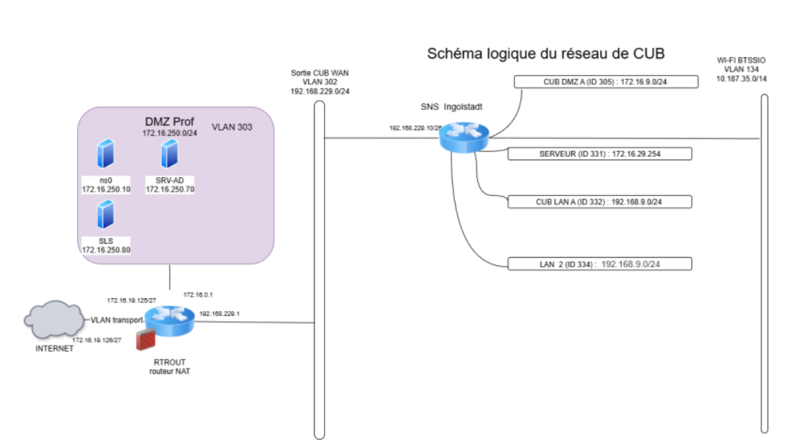

Projet 2 : Déploiement des services réseau (Projet CUB)
Cadre : Projet de spécialité SISR (Épreuve E4) - Infrastructure virtualisée
Contexte et Objectifs
Dans le cadre du projet "CUB", mon objectif était de déployer, configurer et sécuriser l'ensemble des services vitaux nécessaires au bon fonctionnement du système d'information d'une entreprise. L'intégralité de cette maquette a été réalisée et virtualisée sur un environnement Proxmox VE, me permettant de gérer efficacement les ressources allouées à chaque machine virtuelle (VM) et conteneur (LXC).
🗺️ Topologie Réseau du Projet CUB

💻 Vue d'ensemble de l'architecture
La gestion de ce parc virtualisé m'a demandé une grande rigueur dans le nommage et l'adressage des machines. Sur l'hyperviseur cible (nœud siohyp2), j'ai déployé des serveurs sous distribution Linux (Debian) et Windows Server pour répondre aux besoins d'adressage, de résolution de noms et de supervision.
Parmi les machines déployées :
- Des serveurs de rôles (DHCP, DNS, NTP, AD).
- Des outils de gestion de parc (GLPI).
- Des serveurs de supervision (Centreon / Zabbix).
- Des machines clientes de test pour valider le réseau.

Arborescence des machines sur mon hyperviseur
⚙️ Configuration des services clés
Voici le détail technique des missions que j'ai réalisées sur les 4 piliers de cette infrastructure :
📡 Serveur DHCP (VM 131)
Objectif : Automatiser l'attribution des configurations réseau aux postes clients pour éviter les conflits d'IP.
- Configuration des étendues (scopes) pour définir la plage d'adresses IP distribuables.
- Paramétrage des options réseau envoyées aux clients (Passerelle par défaut, Serveur DNS).
- Mise en place de réservations statiques basées sur l'adresse MAC pour que les serveurs (comme GLPI ou Centreon) conservent toujours la même adresse IP tout en restant configurés en dynamique.
🌐 Serveur DNS (VM 273)
Objectif : Assurer la résolution de noms de domaine au sein de l'entreprise (traduire un nom lisible en adresse IP).
- Création de la zone de recherche directe pour permettre aux clients de joindre les services internes via leur nom complet (FQDN).
- Création de la zone de recherche inversée pour des raisons de sécurité et d'audit (traduire une IP en nom).
- Configuration de redirecteurs (Forwarders) pour permettre l'accès à Internet si le nom n'est pas connu en local.
🛡️ Pare-feu & Routage
Objectif : Sécuriser le périmètre de l'infrastructure et cloisonner les différents réseaux locaux.
- Création de règles de filtrage strictes (ACL) pour bloquer par défaut tout le trafic non autorisé.
- Ouverture des flux spécifiques requis pour le bon fonctionnement des services (ports 80/443 pour le Web, port 53 pour le DNS, port 161 pour le SNMP).
- Mise en œuvre du NAT (Network Address Translation) permettant aux machines du réseau privé d'accéder à Internet.
📊 Supervision Centreon (VM 667)
Objectif : Surveiller l'état de santé du parc informatique en temps réel et anticiper les pannes.
- Déploiement du serveur Centreon et ajout des hôtes à superviser dans l'interface web.
- Configuration du protocole SNMP sur les serveurs cibles pour remonter leurs informations.
- Mise en place de sondes pour surveiller la charge CPU, l'utilisation de la RAM, l'espace disque restant et la latence réseau (Ping).
📄 Mes documentations techniques
Consultez mes procédures détaillées pour le déploiement de ces services :
Compétences SIO mobilisées
- Administrer des systèmes et des réseaux.
- Déployer des services (DHCP, DNS).
- Sécuriser les accès et les communications.
- Superviser l'infrastructure.